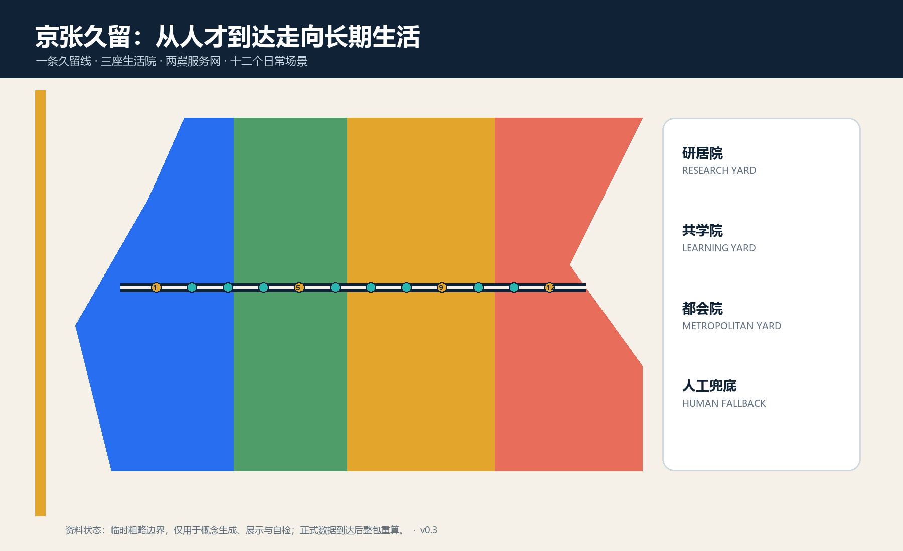

三层范围
43.6 km² 战略研究 / 约11.4 km² 总体设计 / 三处临时重点区
让AI人才完成一段有尊严的日常生活

43.6 km² 战略研究 / 约11.4 km² 总体设计 / 三处临时重点区
众智园研居院 · AI原点共学院 · 大钟寺都会院
研发、照护学习、全球服务、居住配套四类概念分区完整覆盖
一条久留慢行脊；轨道、道路、停车和工程线位待正式资料
日常座椅、饮水、遮荫、冬季日照、无障碍和安静角优先
留、微改、可逆加装、待核新建；公共服务先行
公告1.3/1.4/1.5与agent.1-agent.6均映射到正文、几何、指标、图纸和矩阵。当前包需通过deterministic、spatial、visual与professional evidence四类检查。
来源：征集公告、场地包、智能体任务书、标准快照及六个官方案例页面；完整记录见 sources.json。
假设：官方红线、控规、权属、建筑、市政、文保和公共服务容量待补。